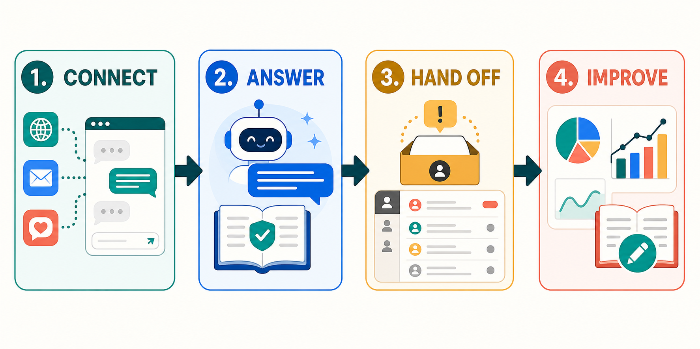

01
Connect
Embed web chat and configure only the purchaser-owned channels you need.
Self-hosted customer support • US + UK
Put web chat, email and purchaser-owned channels into one workflow. Answer from approved knowledge, move uncertain work to a person, and improve from CSAT.
One-time FrontDesk package sold by ShellieSoftwareTools. PayPal is the external sales checkout; FrontDesk itself does not process this product purchase.

Embed web chat and configure only the purchaser-owned channels you need.
Use approved PDF and Office knowledge with citations and explicit tool boundaries.
Put unresolved work in the shared inbox with assignment, notes and takeover.
Review CSAT, queue metrics and knowledge gaps without inventing customer claims.
Quick start
On Windows, double-click Start FrontDesk.cmd. On macOS or Linux, run python quickstart.py --guided.
United States or United Kingdom.
English, or US Spanish for a US installation.
Ollama for real local AI, or Echo for a safe demonstration.
The launcher starts customer chat and the shared inbox, opens both, and copies the temporary administrator token.
Press Ctrl+C in the launcher window to stop both services. Authentication material is not written to a file.
Everyday operations
Keep web and supported purchaser-owned channel conversations in a persistent tenant-scoped queue.
Assign a thread, add internal notes and take over when the bot reaches its boundary.
Leave public knowledge open to guests while protecting account-specific actions behind verified identity.
Load PDF, DOCX, PPTX, XLSX, HTML, Markdown and text into the purchaser-controlled index.
Review satisfaction, volume and resolution signals to decide which content needs work.
Use durable state, webhook deduplication, audit checks and published recovery procedures.
Read the full fictional use-case descriptions and limitations.
FrontDesk package
From $299 USD
One-time purchase. Review each plan, the terms, and the refund policy before purchase.
Solo — $299 Shop — $699 Multi — $1,199